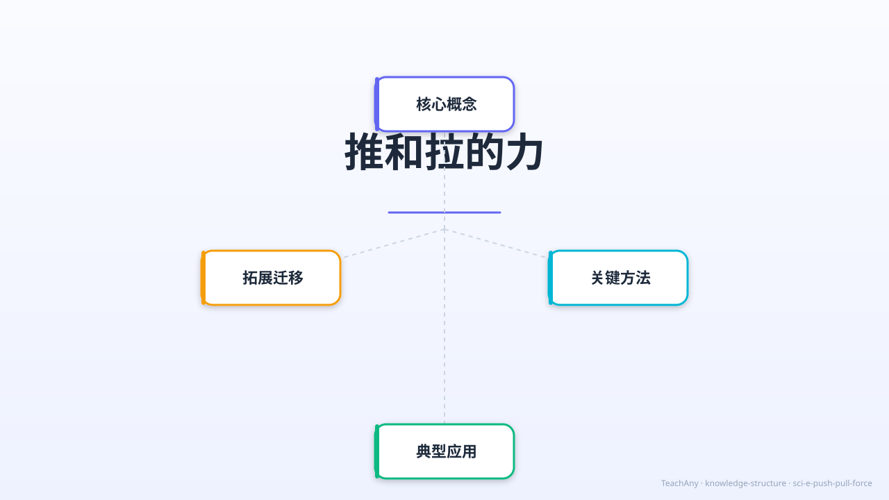

小学科学 G2 · 物质科学
力是物理世界最基本的概念之一。今天我们认识两种最常见的力——推力和拉力，了解它们的方向、效果和大小关系。

LEARNING GOALS
ABT NARRATIVE · 情境引入
小明每天上学，都要推开校门进去，放学又要拉开柜子取书包。 他觉得这只是普通的生活动作——And（并且），他每天都这样做，习以为常。
But（但是），有一天科学老师问： "推门和拉柜子，用的力有什么不同？为什么有时候推一下就够，有时候要使劲推？" 小明愣住了——他从没想过这个问题！
Therefore（因此），今天我们就来探索这两种最基本的力： 推力和拉力。搞清楚它们的方向、效果和大小， 你也能像科学家一样理解生活中的每一个动作！
CORE CONCEPTS
两种力方向相反，但都能让物体运动起来。
用力把物体推离自己，物体向推的方向运动。
用力把物体拉向自己，物体向拉的方向运动。
ANIMATION VIDEO
观察箭头动画——推力让物体远离，拉力让物体靠近。力越大，运动越快！
▶ 点击播放 · 共 22 秒 · 5 个场景
INTERACTIVE SIMULATION
点击"施加推力"或"施加拉力"按钮，调节力的大小，观察小车的移动方向和距离！
EFFECTS OF FORCE
力不只会移动物体，还能改变它的形状！
FORCE MAGNITUDE
同一方向的力，大一点效果就明显一点。
AUDIO NARRATION
点击曲目卡片，跟着小晓晓的声音，再听一遍全课重点。支持连续播放，随时暂停。
INTERACTIVE PRACTICE
点击每个动作卡片，看看答案。试着先自己想一想！
QUIZ
每题只有一个正确答案，选错了会有错因分析哦！
ACHIEVEMENT BADGES
完成各模块，解锁专属徽章！
推和拉的力是我们日常生活中最常见的两种力。推的力是指物体受到向外的力，比如我们用手推门、推购物车；拉的力是指物体受到向内的力，比如我们拉抽屉、拉绳子。这两种力都是接触力，需要物体直接接触才能产生。例如，当你推玩具车时，你的手直接接触车子，施加了一个向前的力；而当你拉书包时，你的手也直接接触书包带，施加了一个向后的力。这两种力的方向相反，但都是通过接触实现的。
推和拉的力可以改变物体的运动状态。例如，推一个静止的球，球会开始滚动；拉一个移动的玩具车，车会减速或停止。力的作用效果还取决于力的大小和方向。比如，用更大的力推门，门会开得更快；而轻轻拉抽屉，抽屉只会缓慢移动。此外，力的作用效果还与物体的质量有关。例如，推一个空箱子和推一个装满书的箱子，需要的力大小不同，因为质量不同。生活中，我们经常利用推和拉的力来完成各种任务，比如推自行车上坡、拉行李箱等。
推和拉的力的方向非常重要，它决定了物体的运动方向。例如，向前推桌子，桌子会向前移动；向后拉椅子，椅子会向后移动。力的方向还可以改变物体的运动状态。比如，向右推一个向左运动的物体，物体会减速甚至改变方向。在体育活动中，力的方向也很关键。比如，踢足球时，脚对球的力方向决定了球的飞行方向；拔河比赛中，两队拉绳子的方向相反，力的大小决定胜负。理解力的方向有助于我们更好地控制物体的运动。
力的大小直接影响物体的运动效果。例如，轻轻推一本书，书可能只移动一点点；用力推，书会滑得更远。我们可以用弹簧测力计来测量力的大小，单位是牛顿（N）。生活中，许多工具利用了力的大小原理。比如，用钳子夹东西时，手柄设计可以放大我们施加的力；用撬棍撬石头时，长手柄可以让我们用较小的力产生较大的效果。此外，力的大小还与摩擦力有关。比如，推一个重箱子需要更大的力来克服摩擦力；而在冰面上推物体，由于摩擦力小，需要的力也较小。
根据牛顿第三定律，力的作用是相互的。当你推墙时，墙也在推你；当你拉绳子时，绳子也在拉你。这种相互作用力大小相等、方向相反。例如，划船时，桨向后推水，水向前推桨，船因此前进。再比如，火箭升空时，向下喷出气体，气体向上推火箭。理解力的相互作用有助于解释许多现象。比如，为什么我们走路时脚要向后蹬地？因为地面对脚的反作用力让我们向前移动。这种相互作用力是自然界的基本规律之一。
许多简单机械利用了推和拉的力。例如，杠杆通过推或拉来放大或改变力的方向。用撬棍撬石头时，我们在长端向下压（推），短端向上撬起石头。滑轮系统则通过拉绳子来改变力的方向或大小。比如，旗杆上的定滑轮可以改变拉力的方向，让我们向下拉绳子就能升起旗帜。斜面也是一种简单机械，推物体上斜面比直接举起来更省力。这些机械让我们能够用较小的力完成较重的工作，体现了推和拉的力的巧妙应用。
推和拉的力常常需要克服摩擦力。例如，推箱子时，箱子与地面的摩擦力会阻碍运动。摩擦力的大小取决于接触面的粗糙程度和压力。在光滑的冰面上推物体比在粗糙的地面上更容易，因为冰面的摩擦力小。有时我们会利用摩擦力，比如拉刹车时，刹车片与车轮的摩擦力让车减速。理解摩擦力有助于我们更好地控制推和拉的力。例如，在湿滑的地面上推车需要更小心，因为摩擦力减小可能导致失控。
推和拉的力不仅存在于人类活动中，也广泛存在于自然界。例如，风推动帆船前进，水流拉动河岸的岩石。地球的引力是一种向下的拉力，让我们能够站在地面上。磁铁之间的吸引和排斥也是推拉力的表现：同极相斥（推），异极相吸（拉）。植物生长时，根部向下拉（向地性），茎部向上推（向光性）。理解这些自然现象中的力有助于我们认识世界的运作规律。推和拉的力是自然界最基本、最普遍的相互作用形式之一。
在日常生活中，推和拉的力无处不在。比如，当我们开门时，我们用手推动门把手，使门转动；而当我们要关门时，我们又会用手拉门把手，使门回到原位。再比如，我们在玩滑梯时，是重力这种拉力让我们能够从高处滑下来，而当我们爬楼梯时，则是我们用自己的推力一步步向上攀登。此外，推和拉的力也体现在我们的运动中，比如在拔河比赛中，两队分别用力拉绳子，试图把对方拉向自己；而在推铅球比赛中，运动员则用力推铅球，使其飞得更远。这些例子都展示了推和拉的力在生活中的重要作用。
推和拉的力在科学上被称为接触力，因为它们需要物体之间的直接接触才能产生。当我们推或拉一个物体时，我们实际上是在对它施加一个力，这个力可以使物体移动、停止或改变运动方向。例如，当我们推一辆静止的自行车时，我们施加的力使自行车开始移动；当我们拉一辆正在行驶的自行车时，我们施加的力使自行车减速或停止。此外，推和拉的力还可以改变物体的形状，比如当我们用力推一个橡皮球时，橡皮球会被压扁；当我们用力拉一根橡皮筋时，橡皮筋会被拉长。这些例子都说明了推和拉的力在科学原理中的重要作用。
1. 你能举出三个生活中推和拉的例子吗？2. 为什么推一个重箱子比推一个轻箱子更费力？3. 拔河比赛中，两队拉绳子的方向有什么关系？
1. 描述一下你刚才推门时施加的力的方向和大小。2. 如果用同样的力推一个球和一个铁块，哪个会移动得更远？为什么？3. 为什么说力的作用是相互的？请举例说明。
常见误区：学生可能认为只有人类才能施加推和拉的力。错因：忽视了自然力和机械力。诊断：通过展示风、水流等自然力的例子，帮助学生理解推和拉的力普遍存在于自然界中。
迁移挑战：设计一个实验，探究不同表面（如木板、地毯、冰面）对推同一物体所需力的影响。要求：1. 列出所需材料；2. 描述实验步骤；3. 分析可能的结果。